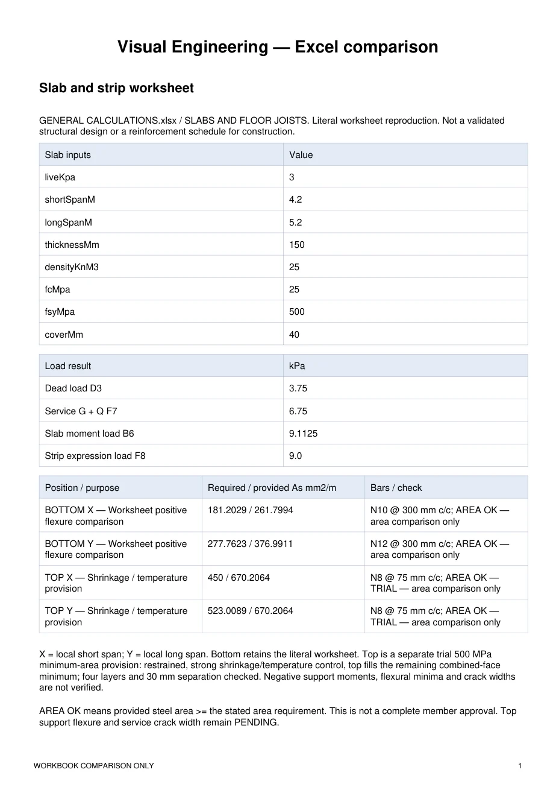

Slab calculations
Read two separate worked studies. The 150 mm floor slab weighs 3.75 kPa. Raising the imposed load from 1.50 to 3.00 kPa increases service load from 5.25 to 6.75 kPa. The worksheet retains the original workbook expressions and identifies their limitations.
For the 6 m post-tensioned strip, reducing effective tendon force from 300 to 240 kN increases short-term midspan displacement from 3.77 to 4.33 mm. The external ultimate moment remains 44.82 kNm. Stage forces are training assumptions.
Loading the report…
